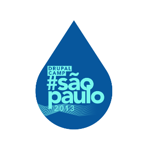

Drupal Camp #São Paulo 2013

:-(
Drush: More Beer, Less Effort
$ drush help
$ drush help help
README README README [...]
$ drush topic docs-readme
http://github.com/nuvoleweb/drush_alias.git
$ dren / drdis / drun [project]
$ drun [project]
$ drdu [project]
/usr/share/php/drush/examples
example.bashrc
# -*- mode: shell-script; mode: flyspell-prog; ispell-local-dictionary: "american" -*-
#
# Example bash aliases to improve your drush experience with bash.
# Copy this file to your home directory, rename and customize it to
# suit, and source it from your ~/.bash_profile file.
#
# Example - rename this to .drush_bashrc, and in your
# ~/.bash_profile add:
#
#
# if [ -f ~/.drush_bashrc ] ; then
# . ~/.drush_bashrc
# fi
#
# Features:
#
# Finds and sources drush.complete.sh from your drush directory,
# enabling autocompletion for drush commands.
#
# Creates aliases to common drush commands that work in a global context:
#
# dr - drush
# ddd - drush drupal-directory
# dl - drush pm-download
# ev - drush php-eval
# sa - drush site-alias
# sa - drush site-alias --local (show local site aliases)
# st - drush core-status
# use - drush site-set
#
# Aliases for drush commands that work on the current drupal site:
#
# cc - drush cache-clear
# cca - drush cache-clear all
# dis - drush pm-disable
# en - drush pm-enable
# i - drush pm-info
# pml - drush pm-list
# rf - drush pm-refresh
# unin - drush pm-uninstall
# up - drush pm-update
# upc - drush pm-updatecode
# updb - drush updatedb
# q - drush sql-query
#
# Provides several common shell commands to work better with drush:
#
# ddd @dev - print the path to the root directory of @dev
# cdd @dev - change the current working directory to @dev
# lsd @dev - ls root folder of @dev
# lsd %files - ls "files" directory of current site
# lsd @dev:%devel - ls devel module directory in @dev
# @dev st - drush @dev core-status
# dssh @live - ssh to the remote server @live points at
# gitd @live pull - run `git pull` on the drupal root of @live
#
# Drush site alias expansion is also done for the cpd command:
#
# cpd -R @site1:%files @site2:%files
#
# Note that the 'cpd' alias only works for local sites. Use
# `drush rsync` or gitd` to move files between remote sites.
#
# By default, aliases are also created for the following standard
# commands:
#
# cd - cddl [*]
# ls - lsd
# cp - cpd
# ssh - dssh
# git - gitd
#
# These standard commands behave exactly the same as they always
# do, unless a drush site specification such as @dev or @live:%files
# is used in one of the arguments. If you do not want to override
# these standard commands, they may be easily removed or commented out
# in your copy of this file.
# Aliases for common drush commands that work in a global context.
alias dr='drush'
alias ddd='drush drupal-directory'
alias dl='drush pm-download'
alias ev='drush php-eval'
alias sa='drush site-alias'
alias lsa='drush site-alias --local'
alias st='drush core-status'
alias use='drush site-set'
# Aliases for drush commands that work on the current drupal site
alias cc='drush cache-clear'
alias cca='drush cache-clear all'
alias dis='drush pm-disable'
alias en='drush pm-enable'
alias pmi='drush pm-info'
alias pml='drush pm-list'
alias rf='drush pm-refresh'
alias unin='drush pm-uninstall'
alias up='drush pm-update'
alias upc='drush pm-updatecode'
alias updb='drush updatedb'
alias q='drush sql-query'
# Overrides for standard shell commands. Uncomment to enable. Alias
# cd='cdd' if you want to be able to use cd @remote to ssh to a
# remote site.
# alias cd='cddl'
# alias ls='lsd'
# alias cp='cpd'
# alias ssh='dssh'
# alias git='gitd'
# Find the drush executable and test it.
d=$(which drush)
# If no program is found try an alias.
if [ -z "$d" ]; then
d=$(alias drush | cut -f 2 -d '=' | sed "s/'//g")
fi
# Test that drush is an executable.
[ -x "$d" ] || exit 0
# If the file found is a symlink, resolve to the actual file.
if [ -h "$d" ] ; then
# Change `readlink` to `readlink -f` if your drush is a symlink to a symlink. -f is unavailable on OSX's readlink.
d=$(readlink $d)
fi
# Get the directory that drush is stored in.
d="${d%/*}"
# If we have found drush.complete.sh, then source it.
if [ -f "$d/drush.complete.sh" ] ; then
. "$d/drush.complete.sh"
fi
# Create an alias for every drush site alias. This allows
# for commands such as `@live pml` to run `drush @live pm-list`
for a in $(drush sa); do
alias $a="drush $a"
## Register another completion function for every alias to drush.
if [ -n "`type _drush_completion 2>/dev/null`" ] ; then
complete -o nospace -F _drush_completion $a > /dev/null
fi
done
# We extend the cd command to allow convenient
# shorthand notations, such as:
# cd @site1
# cd %modules
# cd %devel
# cd @site2:%files
# You must use 'cddl' instead of 'cd' if you are not using
# the optional 'cd' alias from above.
# This is the "local-only" version of the function;
# see the cdd function, below, for an expanded implementation
# that will ssh to the remote server when a remote site
# specification is used.
function cddl() {
s="$1"
if [ -z "$s" ]
then
builtin cd
elif [ "${s:0:1}" == "@" ] || [ "${s:0:1}" == "%" ]
then
d="$(drush drupal-directory $1 --local 2>/dev/null)"
if [ $? == 0 ]
then
echo "cd $d";
builtin cd "$d";
else
echo "Cannot cd to remote site $s"
fi
else
builtin cd "$s";
fi
}
# Works just like the `cd` shell alias above, with one additional
# feature: `cdd @remote-site` works like `ssh @remote-site`,
# whereas cd above will fail unless the site alias is local. If
# you prefer the `ssh` behavior, you can rename this shell alias
# to `cd`.
function cdd() {
s="$1"
if [ -z "$s" ]
then
builtin cd
elif [ "${s:0:1}" == "@" ] || [ "${s:0:1}" == "%" ]
then
d="$(drush drupal-directory $s 2>/dev/null)"
$(drush sa ${s%%:*} --component=remote-host > /dev/null 2>&1)
if [ $? != 0 ]
then
echo "cd $d"
builtin cd "$d"
else
if [ -n "$d" ]
then
c="cd \"$d\" \; bash"
drush -s ${s%%:*} ssh --tty --escaped "$c"
drush ${s%%:*} ssh --tty --escaped "$c"
else
drush ssh ${s%%:*}
fi
fi
else
builtin cd "$s"
fi
}
# Allow `git @site gitcommand` as a shortcut for `cd @site; git gitcommand`.
# Also works on remote sites, though.
function gitd() {
s="$1"
if [ -n "$s" ] && [ ${s:0:1} == "@" ] || [ ${s:0:1} == "%" ]
then
d="$(drush drupal-directory $s 2>/dev/null)"
$(drush sa ${s%%:*} --component=remote-host > /dev/null 2>&1)
if [ $? == 0 ]
then
dssh ${s%%:*} cd "$d" \; git "${@:2}"
else
echo cd "$d" \; git "${@:2}"
(
cd "$d"
"git" "${@:2}"
)
fi
else
"git" "$@"
fi
}
# Get a directory listing on @site or @site:%files, etc, for local or remote sites.
function lsd() {
p=()
r=
for a in "$@" ; do
if [ ${a:0:1} == "@" ] || [ ${a:0:1} == "%" ]
then
p[${#p[@]}]="$(drush drupal-directory $a 2>/dev/null)"
if [ ${a:0:1} == "@" ]
then
$(drush sa ${a%:*} --component=remote-host > /dev/null 2>&1)
if [ $? == 0 ]
then
r=${a%:*}
fi
fi
elif [ -n "$a" ]
then
p[${#p[@]}]="$a"
fi
done
if [ -n "$r" ]
then
ssh $r ls "${p[@]}"
else
"ls" "${p[@]}"
fi
}
# Copy files from or to @site or @site:%files, etc; local sites only.
function cpd() {
p=()
for a in "$@" ; do
if [ ${a:0:1} == "@" ] || [ ${a:0:1} == "%" ]
then
p[${#p[@]}]="$(drush drupal-directory $a --local 2>/dev/null)"
elif [ -n "$a" ]
then
p[${#p[@]}]="$a"
fi
done
"cp" "${p[@]}"
}
# This alias allows `dssh @site` to work like `drush @site ssh`.
# Ssh commands, such as `dssh @site ls /tmp`, are also supported.
function dssh() {
d="$1"
if [ ${d:0:1} == "@" ]
then
drush "$d" ssh "${@:2}"
else
"ssh" "$@"
fi
}
$ drush cc all
http://drupal.org/project/features
All commands in features: (features)
features-add (fa) Add a component to a feature module. (DEPRECATED: use features-export)
features-components (fc) List features components.
features-diff (fd) Show the difference between the default and overridden state of a feature.
features-export (fe) Export a feature from your site into a module.
features-list (fl, features) List all the available features for your site.
features-revert (fr) Revert a feature module on your site.
features-revert-all Revert all enabled feature module on your site.
(fr-all, fra)
features-update (fu) Update a feature module on your site.
features-update-all Update all feature modules on your site.
(fu-all, fua)
http://drupal.org/project/module_builder
~/.drush/modules/
All commands in module_builder: (module_builder)
mb-analyze (mban) List the hooks found in a given module.
mb-build (mb) Generate the code for a new Drupal module, including file headers and hook implementations.
mb-debug Debug module builder. Does whatever was needed at the time.
mb-dir Print the location of the module builder data directory.
mb-dochooks Adds comment headers to hooks that need them in the given module.
mb-docparams Adds params... WIP!
mb-download (mbdl) Update module_builder hook data.
mb-list List the hooks module_builder knows about.
All commands in kraftwagen: (kraftwagen)
kw-apply-module-dependencies (kw-amd) Check if all required modules are enabled, enable them if they are not, and disable them if the are enabled, but not required.
kw-build (kw-b) Create a build from the source
kw-import-translations (kw-it) Import all .po files in the project for enabled components.
kw-init-database (kw-id) Initialize (or re-initialize) the database for a Kraftwagen build.
kw-new-project (kw-np) Create a new project. This will create an new source directory from a Git skeleton repository.
kw-setup (kw-s) Sets up the environment, settings files and uploaded files directory for a Kraftwagen project.
kw-update (kw-u) Update a Kraftwagen project. Runs all commands necessary to bring the database in sync with code in the build.
kw-update-makefile (kw-um) Update an existing makefile to the newest version of contributed modules. This will NOT do any major updates.
Use a barra de espaço ou setas para navegar